It’s no surprise that Instagram’s become a lucrative, money-making online space for businesses and influencers alike. Statistics show that there are currently over one billion monthly active users as of 2019, 80% of which are currently following a brand account.
To top that off, 60% of Instagrammers discover new products or services on the platform, and brand engagement is 10 times higher than Facebook, 54 times higher than Pinterest, and 84 times greater than Twitter (calculations taken from Brandwatch)– so it’s no wonder people flock to the site to for some cash potential.

Courtesy of postmates (Instagram account).
With the ease of setting up a profile and the user-friendliness of the platform, pursuing an online business venture on Instagram isn’t that far-fetched a goal. In fact, you can learn how to make money on Instagram today; but first, let’s discuss essentials.
How To Get Paid On Instagram – What You’ll Need
Before you start chasing after dollar signs, it’s vital to have these Instagram factors in check.
A Substantial Following
Monetizing your Instagram requires loyal customers – generally derived from an already established audience. It’s thus imperative that you’ve gained yourself a decent following of loyal, interested consumers; people who’ve “subscribed” to your profile and brand, and are eagerly willing to see more.

Courtesy of ayylienclothing (Instagram account).
Think of the most successful businesses currently thriving on the platform; chances are, these accounts hold a minimum of four digits in their follower count. Getting paid on Instagram involves selling yourself or a product – and without a following, who will you be selling to?
An Engaged Audience
As much as numbers make a difference, follower engagement rules above the rest. Having an impressive number displayed on your follower count provides other users with a social proof, yes. But it also undoubtedly creates a temporary feeling of flattery and success.
However, even if you flaunt an Instagram following in the thousands – little to no engagement from these users make about as much sales impact has having a few hundred followers.

Courtesy of michelle_lewin (Instagram account).
Therefore, learn to engage with your audience, encouraging them to like, comment, and interact with your content. And above all else – don’t settle for fake or bot followers; this type of “empty” audience can clearly show in your non-existent post engagement. At the same time, it can put you at risk of the Instagram “shadowban”.
Creativity and Drive
Now comes the fun (if not most challenging) part of the process – having an outstanding business idea or persona.
Making money on Instagram comes in two main forms: having your own business, or being an influencer. Either path involves having unique, original ideas to help you stand out from the crowd. If you’re an influencer, you’ll need an exceptional personality and aesthetic; if you’re a business, you’ll need a product in high demand with competitive edge above the rest. After all, you’ve got over 25 million other brands on the platform to compete with.

Courtesy of theoriginalmoonpie (Instagram account).
To top it off, you’ll need the drive and persistence to find success. While the potential of earning top dollar is there, you’re going to have to put in the hard yards to get there. This includes the consistent creation of high-quality content, rigorous marketing, and frequent interaction with other users and followers.
A Business Profile
Last but not least, you’ll need a business profile. Those just starting out on Instagram are provided with a personal account by default, but this can easily be changed through your settings.
To do this, tap on the three horizontal lines on the upper right-hand corner of your profile.

Select “Settings”, next to the gear icon.
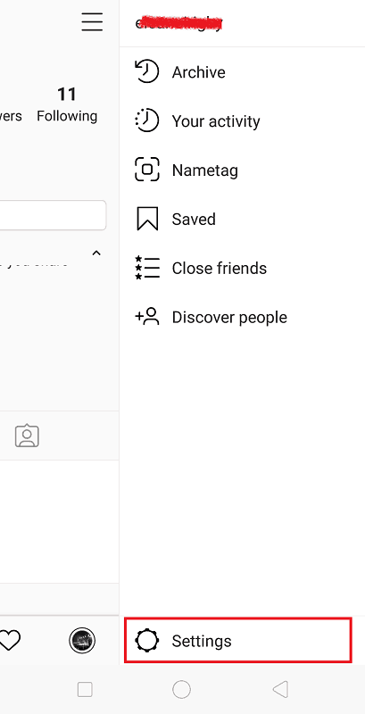
Tap “Account”.
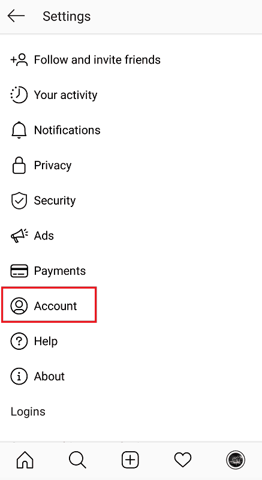
At the bottom of your provided options is “Get more tools” in blue font. Tap on this.
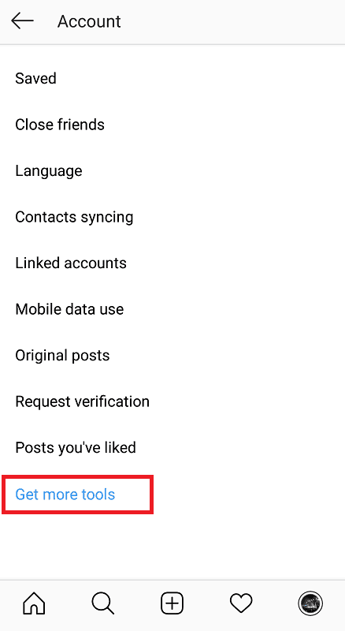
You’ll then be asked to describe yourself as either a creator or business. Depending on how you plan to make your money on the platform, select the one that suits you best. For this example, we’ll choose “Business Tools”.
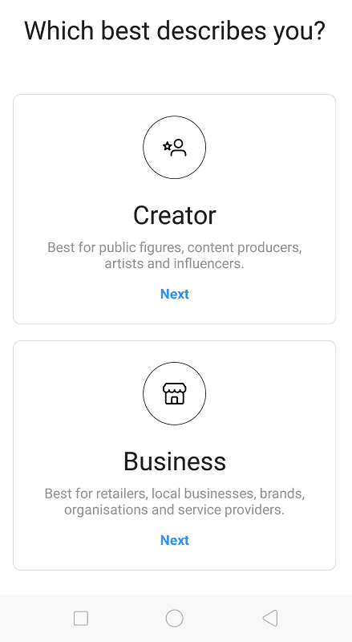
You’ll then be given a brief overview of the new tools at your disposal. Tap “Continue”.
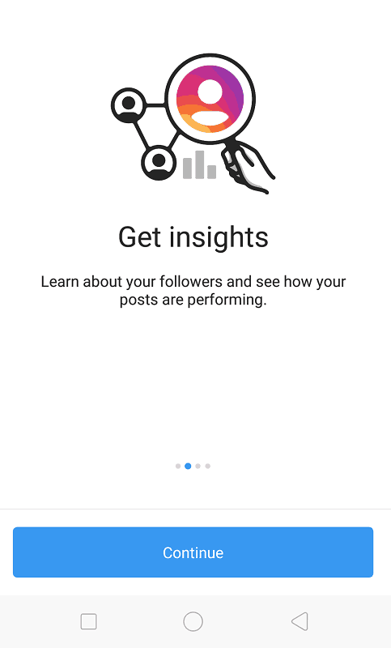
Select the categories that best describe your business.
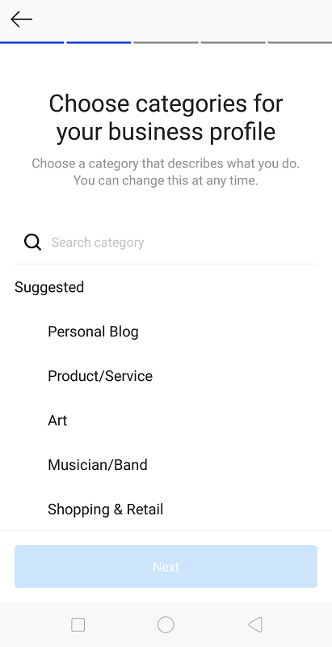
Confirm your e-mail address.
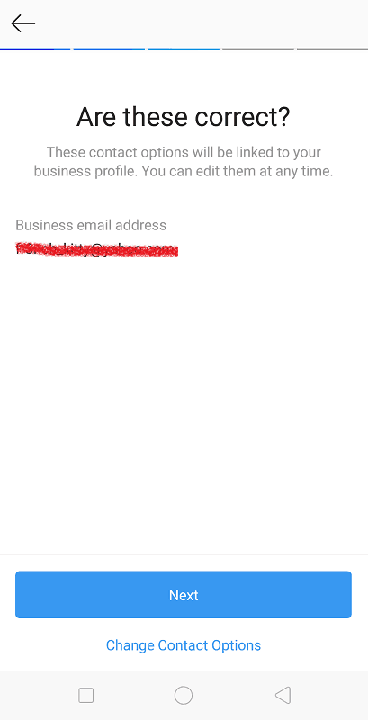
If you have a Facebook page, you can choose to connect it to your new business account. This is helpful for accessing insights or ads management via Facebook’s tools.
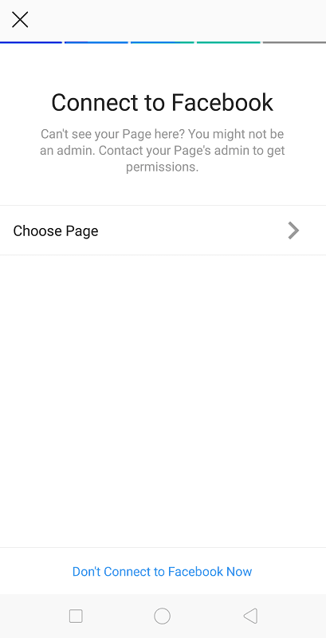
And you’re done! With a business profile, you’ll have new analytical and advertising tools at your disposal. You can also provide an e-mail address for new clients or customers to easily get in touch!
How To Make Money On Instagram #1 – Brand Sponsorships
Now that we’ve laid the groundwork for monetizing Instagram, it’s time to explore your options. One of the most common and popular ways of getting paid on Instagram is through brand deals or sponsorships as a content creator or influencer.
Through sponsored posts, brands will pay you feature their product or service on your profile. In turn, you’ll get paid for your efforts, and they get access to your audience.

Courtesy of aakritiranaofficial (Instagram account).
This is where having an established, engaged following becomes a necessity. Businesses tend to partner up with users who have substantial amount of reach and influence; their primary goal is to raise brand and product awareness, after all.
When doing a brand deal, it also helps to over-deliver in your post. This flaunts your creativity as an influencer, and impresses your brand with outstanding results in the process.

Courtesy of rudymancuso (Instagram account).
Musician Rudy Mancuso did just this in his sponsored ad for Lucasfilm’s and HP’s new campaign collaboration. In his post, he creates his own version of the Star Wars theme using the new HP x360.
Monetizing Instagram Though Brand Deals – The Wrong Way
It’s also important to consider your personal support for the brand, and how well their products tie in to your overall message and persona. Users aren’t dense, and can generally pick up on inauthenticity when they see it. This was the case with fashion, beauty, and lifestyle blogger Chriselle Lim, who was slammed by fans for her ingenuine advertising of the automotive brand, Volvo.

Courtesy of chrisellelim (Instagram account).
Commenters were quick to point out the overly staged and ingenuine nature of her post. Compared to her usual content, it all just seemed out of place. Lesson learned: be sure you and your brand sponsorship are a good fit, lest it quickly turns into awkward, untrustworthy advertising for your followers.
How To Make Money On Instagram #2 – Join An Affiliate Network
If you’re yet to be sponsored by another brand, perhaps joining an affiliate network can bolster your image as an influencer.
Affiliate networks are online marketplaces comprised of companies that sell a product or service. Here, merchants provide influencers or bloggers with affiliate programs that enable these individuals to sell their products for a commission.

Courtesy of ShareASale.
Upon joining a program, you’ll then gain access to the available products and services you can promote from the company.

Courtesy of Amazon Associates.
Each provides you with its very own affiliate link, which you can then promote on your Instagram. This leads your viewers to the corresponding product page. If you sell the product well and they end up buying a product, the merchant is informed of this sale, and you get a commission.

Courtesy of theskincarebeach (Instagram account).
If this sounds like a profitable path for you, popular affiliate networks to get you started include ShareASale, Amazon Associates, and Rakuten Marketing. As with brand sponsorships, it’s best to have a focused niche for your business profile, and to promote products that best suit your brand and message.
How To Make Money On Instagram #3 – Selling Your Own Product
Of course, if you’ve got your very own product or service to sell, Instagram marketing is the way to go.
Rather than heading down the “influencer” route – which often involve crafting an appealing personal image and lifestyle – other users set up a profile for sole business purposes, marketing their goods off the bat with a professional brand image.

Courtesy of dollarshaveclub (Instagram account).
To monetize your Instagram with this method, you must firstly create an online store. While some may opt to set up their own e-commerce website, others can make use of platforms for online entrepreneurs; such as Etsy or Shopify.

Courtesy of small_peche (Instagram account).
Your regular feed thus becomes a space for advertising the contents of your store, whether through high-quality product photos, creative marketing videos, or user-generated content (i.e. re-sharing sponsored posts from influencers you may work with).

Courtesy of small_peche (Instagram account).
To direct traffic to your actual store, you can simply leave a link in your bio or photo captions.
Get Paid On Instagram Through Instagram Shopping
Users who choose to sell through Shopify or BigCommerce are in luck – a recent Instagram feature now allows for users to turn their feed into a shopping experience.
With Shopping on Instagram, businesses can add product tags to their posts (or product stickers on their Stories). These tags give viewers a quick glance of how much the item costs. When tapped, the viewer is directed to a product description page providing further images and information on the product. This page also provides a link to your online store.

Courtesy of Shopify app.
To take advantage of this, businesses must have a corresponding Facebook page, must be selling physical goods, and have a Facebook Catalog set up through Facebook’s Business Manager or through the e-commerce platform they’re a part of.
Monetizing Instagram By Selling Your Photos
Instagram is an especially handy tool for photographers looking to make a profit. Being the visual gallery that it is, your profile operates like a public portfolio, showcasing your talent and eye for stunning images.

Courtesy of johnnydegelder (Instagram account).
Marketing has also never been easier with the use of hashtags, which you can use to freely exhibit your work to audiences in your niche. The likes, interactions, and follows you get from capturing attention-grabbing photos can serve as social proof for your abilities as a professional photographer.

Courtesy of scotch.bonnet (Instagram account).
Once you’ve established an audience and have gained enough reach, you can opt to sell prints of your most successful photos or sell your photography skills as a service for any interested clients.
How To Make Money On Instagram #4 – Advertising Events
Finally, as an incredibly popular and active social platform, Instagram is a highly effective network for advertising any events you may be hosting.

Courtesy of superduperkyle (Instagram account).
Once again, having an established following helps; the more people already interested in your brand and content, the higher your event turnout will be.
However, through the use of hashtags and location tags, you can easily advertise your event to potential followers who are yet to discover your business. Run a successful marketing campaign on the platform – and you’ll be raking in plenty of ticket sales!

Create Hype Through Story Countdowns
Other than the standard Instagram photo or video, Stories are also highly useful for generating hype. More specifically, the “Countdown” stickers provided by Instagram Stories helps remind interested users of an upcoming event, keeping them excited for a forthcoming product launches or special occasions.
Courtesy of dj.amil_ (Instagram account).
To use Countdown stickers in your Stories, select the appropriate sticker from the catalogue.
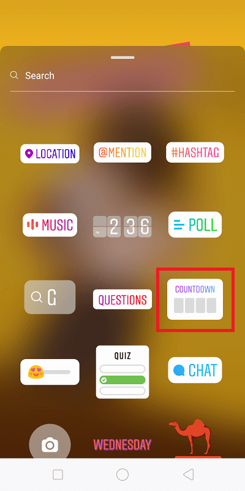
Add a brief CTA label to your countdown.
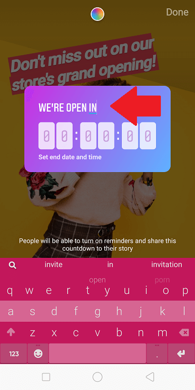
Finally, select the date and time of your event.
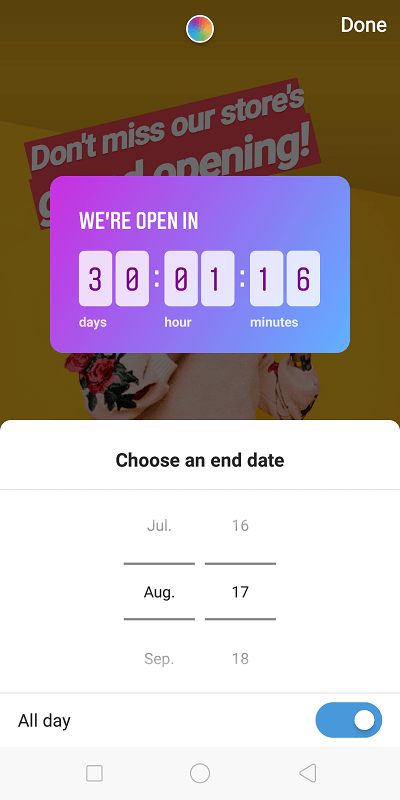
Once that’s down, tap on “Your Story” to publish your update. Users who follow you can then view the countdown for your upcoming event, and tap on it to receive a reminder. Alternatively, they can also choose to share it on their own profile.
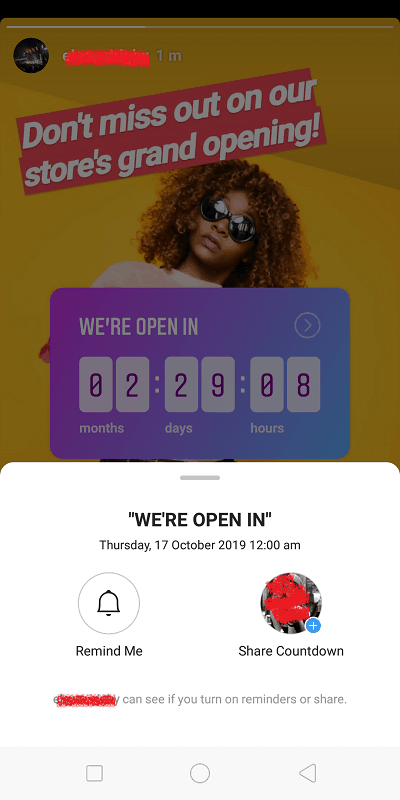
Ready To Get Paid On Instagram?
Living in an era of social media is fascinating enough, with people from all walks of life now more connected (and constantly, at that) than ever before. However, what was once a mere tool for online networking has now evolved into a full-blown industry, brimming with career opportunities for those with an entrepreneurial drive.
Influencer marketing doesn’t seem to be slowing down anytime soon, with brands planning to increase their budget for influencers in the coming year. At the same time, with over one-eighth of the world’s population on Instagram, their role as a top online-selling platform is going strong.
Using the right tools, marketing knowledge, and outstanding business ideas, you too can learn to make money on Instagram – and if you’re lucky, a full-time income at that.